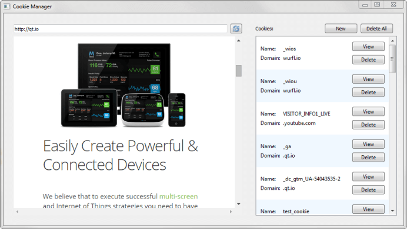

WebEngine Cookie Browser Example
A cookie browser based on Qt WebEngine Widgets.

Cookie Browser demonstrates how to use the Qt WebEngine C++ classes to manage cookies. The browser can be used to view cookie content as well as delete cookies and add new cookies.
Running the Example
To run the example from Qt Creator, open the Welcome mode and select the example from Examples. For more information, visit Building and Running an Example.
Files and Attributions
The example uses icons from the Tango Icon Library:
| Tango Icon Library | Public Domain |